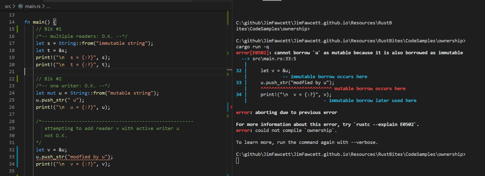
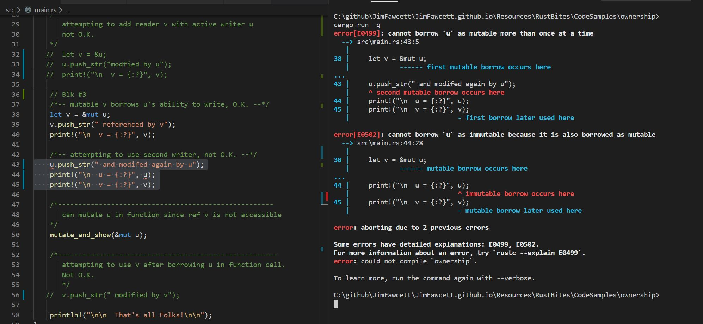
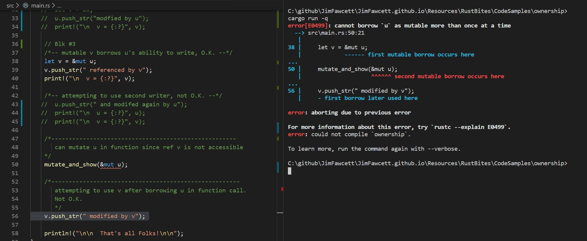

Rust ownership policy is a set of rules that apply to read, write, allocation, and disposal operations on data.
These rules, enforced by the Rust compiler, are responsible for Rust's memory safety.
Interior Mutablity shares responsibility for situations
where the compiler's static analysis is insufficient to prove that some code is indeed
correct, especially for threading applications. We will look at that in a subsequent Bite.
Now we focus on the results of static analysis by Rust's compilation tools.
1. Ownership Rules:
Ownership rules are, in principle, quite simple, essentially RwLock semantics:
There is only one owner for every data item
Ownership can be transferred with move operations
Ownership can be borrowed by creating references
Any number of readers may have access to a data value simultaneously
Writers get exclusive access to a value - no other readers or writers
What are readers and writers?
Any variable bound to a value with no mut qualifier is a reader.
Owner: let s = String::from("a string");
References to the data: let t = &s;
Any variable bound to a value with a mut qualifier is a writer.
Owner: let mut u = String::from("a string");
References to the data: let v = &mut u;
References are called borrows because they block the owner u's
ability to mutate its owned resource.
While mutable reference, v, is active, owner, u, is not allowed
to mutate its owned value - that's borrowed by v.
There can only be one mutable reference, since the
ability to write is exclusive. That's why a mutable reference blocks the
the owner's ability to mutate.
References are active from the time they are created (with a let statement)
until they go out of scope.
References can be dropped. What that does is interesting, but not very useful.
Dropping an immutable reference does nothing. reference is valid after the drop.
Dropping a mutable reference moves the reference, but not the
referend, to Drop's stackframe. That makes the mutable reference unavailable (been moved).
Nuances:
No practical process can exactly divide all programs into safe and not-safe code. The borrow-checker is conservative.
If it can't prove that a program is safe it will not build the program.
The rules stated above have some qualifications that allow more programs to build safely. These
are known by the Rust community as non-lexical lifetime rules - see
Rust 2018 edition-guide
An expression with non-mutable reference to x, inside the scope where a mutable reference
to x is defined,
will compile if no other expression argument supports mutation of x.
A non-mutable reference to x may be defined and used in the scope where a mutable reference
to x is defined, provided that the mutable reference is not used after the non-mutable
reference is declared.
These rule relaxations still maintain the "no aliases when mutating" invariant.
There is one other case: It may be that during program operation a variable will never be
mutated at the same time that an alias to the variable exists, even though the scope rules
above are violated. In this case a RefCell<T> may be created. That appears to the
compiler to be non-mutable, but a mutable reference can be extracted from it.
The RefCell tracks references and mutation in time.
If our reasoning about the timing of mutation and aliasing is incorrect, the
RefCell will panic and program operation terminates, preventing undefined behavior.
In the dropdown, below, you will find examples of all these rules in action, with violations
in comment blocks. We will discuss the valid code in this example.
Examples of Ownership
In the first block, Blk #1, in main we see two active readers - O.K.
In the second block, Blk #2, we see one writer - O.K.
In the last uncommented block, before the function call, Blk #3, we see reference v borrowing u's
ability to mutate, so there is only one writer - O.K.
In the function we see a reference to u mutating. This is not a violation because the
reference, &mut String, goes out of scope at the end of the function.
The commented blocks will be discussed in the next examples.
ownership::main.rs
/////////////////////////////////////////////////////////////
// ownership::main.rs - demonstrates Rust ownership //
// //
// Jim Fawcett, https://JimFawcett.github.com, 07 Jun 2020 //
/////////////////////////////////////////////////////////////
/*-- only one writer in function scope --*/
fn mutate_and_show(t:&mut String) {
t.clear();
t.push_str("new value");
print!("\n t in function = {:?}", t);
}
fn main() {
// Blk #1
/*-- multiple readers: O.K. --*/
let s = String::from("immutable string");
let t = &s;
print!("\n s = {:?}", s);
print!("\n t = {:?}", t);
// Blk #2
/*-- one writer: O.K. --*/
let mut u = String::from("mutable string");
u.push_str(" u");
print!("\n u = {:?}", u);
/*-----------------------------------------------------
attempting to add reader v with active writer u
not O.K.
*/
// let v = &u;
// u.push_str("modfied by u");
// print!("\n v = {:?}", v);
// Blk #3
/*-- mutable v borrows u's ability to write, O.K. --*/
let v = &mut u;
v.push_str(" referenced by v");
print!("\n v = {:?}", v);
/*-- attempting to use second writer, not O.K. --*/
// u.push_str(" and modifed again by u");
// print!("\n u = {:?}", u);
// print!("\n v = {:?}", v);
/*-----------------------------------------------------
can mutate u in function since ref v is not accessible
*/
mutate_and_show(&mut u);
/*------------------------------------------------------
attempting to use v after borrowing u in function call.
Not O.K.
*/
// v.push_str(" modified by v");
println!("\n\n That's all Folks!\n\n");
}
Output:
cargo run
Running `target\debug\ownership.exe`
s = "immutable string"
t = "immutable string"
u = "mutable string u"
v = "mutable string u referenced by v"
t in function = "new value"
That's all Folks!
The example below shows that you can't mutate an owner with an active reader, Even
though it is declared mut.
Note that the compiler error messages tell you exactly what the problem is and where
it occured.
Example: First Commented Error Block

This second example shows that you can't have two active writers for the same data.
The compiler error messages are again quite clear about the problems.
Example: Second Commented Error Block

The last example shows attempt to mutably borrow the owner u twice, e.g., two writers.
Example: Third Commented Error Block

These examples may seem complicated, but references are most often used to pass arguments
to functions by reference, which is actually quite simple.
2. Exercises:
Note:
In order to build and run with cargo from the Visual Studio Code terminal you need to open
VS Code in the package folder for the code you want to build and run. That's the folder where
the package cargo.toml file resides.
Create an instance of a Vec<String>. Show that you can mutate using the owner identifier
and using a reference.
Verify that it was mutated as expected.
Pass a reference to your Vec to a function that displays the Vec contents.
Add to the Code of the previous exercise code that attempts to violate ownership
rules in as many unique ways as possible, but be DRY.
Write code that fixes each problem based on the compiler error messages
3. Conclusions:
The Rust ownership rules are simple in principle, but following the simple rules is not always
simple. They can fail in several ways, sometimes at unexpected places. Fortunately the compiler
almost always provides very clear error messages, and occasionally even suggests solutions.
At first you may struggle a bit to get things to compile, but if you fix the problems reported by
the compiler, you can quickly move on. After a little practice you will find the process becomes
very manageable.
A good way to minimize ownership problems in your code is to create references, when you need them,
in local scopes, usually by defining a function that passes its arguments by reference. The LifeTime
of the references last from function entry until the thread of execution leaves the
function.